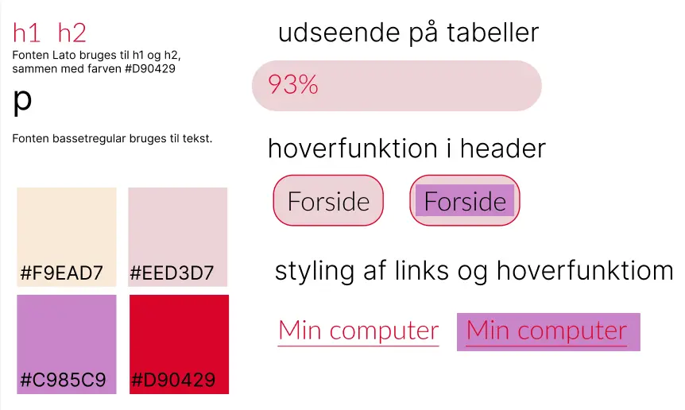

02
Grundlæggende web
Studiestartsprøven
Vores første forløb på MMD var studiestartsprøven. Prøven var introduktionsfasen til selve kernen af vores studie, og det var her, de mest anvendte redskaber i multimediedesign blev gennemgået, herunder digitale brugergænseflader, indholdsproduktion, kommunikation og responsivt webdesign.
Wireframes
I dette forløb lærte vi om wireframes som bruges tidligere i designprocesser, og bruges til at visualisere strukturen af en hjemmeside, uden at fokusere på det grafiskeudtryk.
Grid
I dette forløb lærte vi at arbejde med grid, som er et redskab der bruges til layoutstruktur på hjemmesider.
Designprincipper
I dette forløb lærte vi om designkonventioner
som er en række principper, regler og normer
indenfor webdesign.
Disse er skabt over tid, og skal hjælpe med at skabe brugervenlig på sitet.
Dette kan være fonte, styling af links, placering af navigation osv.
Wireframes
Her er nogle af de wireframes, som skulle bruges til opbygningen af projektet.
Der er både
desktop og mobil wireframes, hvilket viser det responsive layout.
Index wireframe til desktop
komponter wireframe til desktop
Index wireframe til mobil
komponter wireframe til mobil
Styletile for projektet
Styletilet viser farvepaletten for sitet, de udvalgte fonte, de forskellige hovereffekter og den rosenfarvede nuance som elemeterne har.
Brug af grid i projektet
Da vi skulle lave et responsivt webdesign er grid et godt redskab. Gridsystemer er fleksible og kan tilpasses til mange skærme.